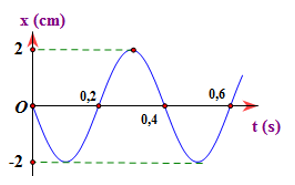
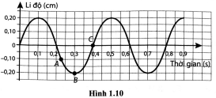
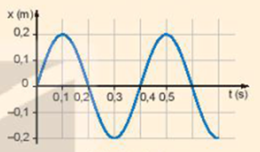

PHẦN II. Câu trắc nghiệm đúng sai
Trong mỗi ý a), b), c), d) chọn Đúng hoặc Sai. Đúng 1 ý: 0,1 · 2 ý: 0,25 · 3 ý: 0,5 · 4 ý: 1,0 điểm.
1
Một vật dao động điều hòa với phương trình 
a) Tần số góc của dao động là $2\pi$ rad/s.
b) Chu kì dao động của vật là 1 s.
c) Pha ban đầu của vật là  rad.
rad.
rad.d) Quãng đường vật đi được trong một chu kì là 16 cm.
2
Một chất điểm dao động điều hòa với phương trình $x = 10\cos(2\pi t + \pi/2)$ cm.
a) Chiều dài quỹ đạo của vật là 5 cm.
b) Tần số góc của dao động là $2\pi$ rad/s.
c) Pha ban đầu của dao động là $2\pi$.
d) Lúc t = 0 vật đi qua vị trí cân bằng theo chiều âm.
3
Một chất điểm dao động điều hòa và đi được quãng đường 20 cm trong một chu kỳ với tần số 1 Hz.
a) Biên độ dao động của chất điểm là 5 cm.
b) Chu kì dao động của chất điểm là 2 s.
c) Tốc độ của chất điểm khi qua vị trí cân bằng là $10\pi$ (cm/s).
d) Gia tốc của chất điểm khi đi qua vị trí cân bằng là 0.
4
Một vật dao động điều hòa theo phương trình $x = 5\cos(4\pi t + $ $)$ cm.
$)$ cm.
$)$ cm.a) Biên độ dao động của vật là 5 cm.
b) Tần số dao động của vật là 2 Hz.
c) Pha ban đầu là
d) Tại thời điểm t = 1 s hãy xác định li độ của dao động là $x = 2{,}5$ cm.
cm.
cm.5
Một vật thực hiện dao động điều hòa với phương trình $x = 10\cos 2\pi t$ (cm).
a) Biên độ A = 10 cm, pha ban đầu $\varphi_0 = 0$ (rad)
b) Pha dao động khi t = 2,5 s là $5\pi$ (rad).
c) Li độ khi t = 10 s là: -10 (cm)
d) Quãng đường vật đi được sau 1 dao động là 40 (cm)
6
Một vật dao động điều hòa có đồ thị li độ phụ thuộc thời gian như hình.

a) Biên độ dao động của vật bằng 2 cm.
b) Chu kì dao động của vật bằng 0,6 s.
c) Pha ban đầu của dao động là $-0,5\pi$ rad.
d) Tại thời điểm $t = 0,6$ s vật ở vị trí cân bằng.
7
Cho đồ thị li độ theo thời gian của một vật dao động điều hòa như hình vẽ:

a) Biên độ dao động của vật bằng 0,2 cm.
b) Chu kì dao động của vật bằng 0,4 s.
c) Pha ban đầu của dao động là $0,5\pi$ rad.
d) Tại thời điểm $t = 0,5$ s vật ở vị trí biên.
8
Hình trên là đồ thị dao động điều hòa của một vật.

a) Biên độ dao động của vật bằng 0,2 cm.
b) Chu kì dao động của vật bằng 0,4 s.
c) Pha ban đầu của dao động là $0,5\pi$ rad.
d) Tại thời điểm $t = 0,5$ s vật ở vị trí biên dương.